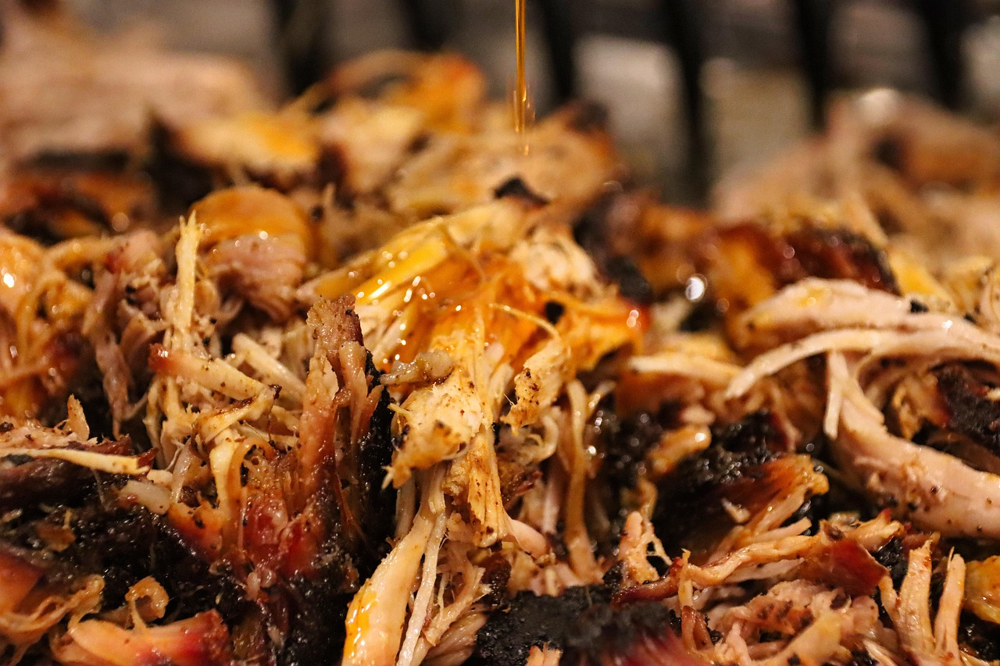

Pulled Pork

Image by Alexander Fox | PlaNet Fox from Pixabay
Description
This recipe comes from somewhere on the internet, I have no idea where I got it from, you can probably just google it and you will find a close realtive to it in some form or
another. Just to add, I putting forth here just a recipe on how to make the pulled pork, no toppings or side, or home made buns (maybe I will add that in later as i do have a pretty good recipe)
but I will put an extra section listing some things this pairs well with.
Pulled pork is one of my absolute favourite, especially the smoked variety! but sadly, this recipe comes you in the form of a slow cooker, so a slow cooker will be needed, you can also do it
in an oven if you so wish, but a slow cooker is what my cooking tool will be today. Pulled pork, where to begin! Its's simple, delicious, and quite frankly nothing can compare to it. It really
is the embodiment of easy cooking but packed with flavour, now this a is BBQ flavoured one, so we will be using a BBQ spice to which I will put a link in the ingredients list that you can go to
for the recipe, OR you can just use whatever BBQ spice you have lying around. Either way it will be delicious.
ingredients
Directions
- lets begin by taking off the skin (if there is skin to remove) and setting it aside, you can use it to make crackling if you like or just toss it. (no crackling recipe included), then lets get
the pork covered in our freshly made (or bought) BBQ spice rub!, lastly mix the water and apple cider vinegar together in a seperate bowl.
- Now we move to out slow cooker, lets get it opened up, pour in the water/apple cider mix and then put a trivet (a like mini stand for putting into tray to lift the item off the ground so
it doesnt sit in the juices.) and place the pork on top of the trivet.
- Lastly set your slow cooker on to low and let cook for 6 hours making sure to have a lid on the cooker.
- Once done cooking we will now want to do the actual pulled part, simply take the pork out the slow cooker (dont worry if it falls apart when you pick it up, its supposed to do that!) and put it on a tray or something to catch
the juices. Then get two forks and start PULLING IT APART! as the name would suggest. its that simple stick both forks in and pull to the sides. I will say try not to get thin hair strands, try to
leave it just a little chunky in pieces, nothing wrong with it being just spaghetti strands, but having clumps of pork does tend to look more appealing.
- Now this very last bit is optional, you can if you like place the pork in a tray and put it under a hot grill to get some colour, I like to do this to get some crispy texture thrown into the mix
, totally optional though, if you are happy to skip this bit, then go on ahead and enjoy it as is!
Some side options/Compliments
- Cauli bake
- Potato bake
- Coleslaw
- Served in a bun
- Salad! (a good salad is always great with this especialy during the summertime)
- Buttered Corn Cobs
- Your favourite sauce
- and many more!